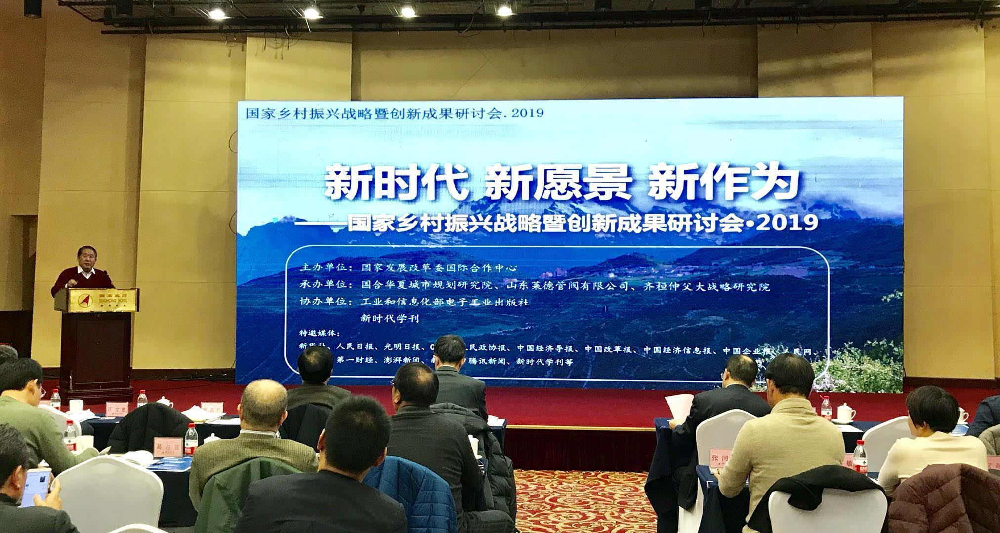
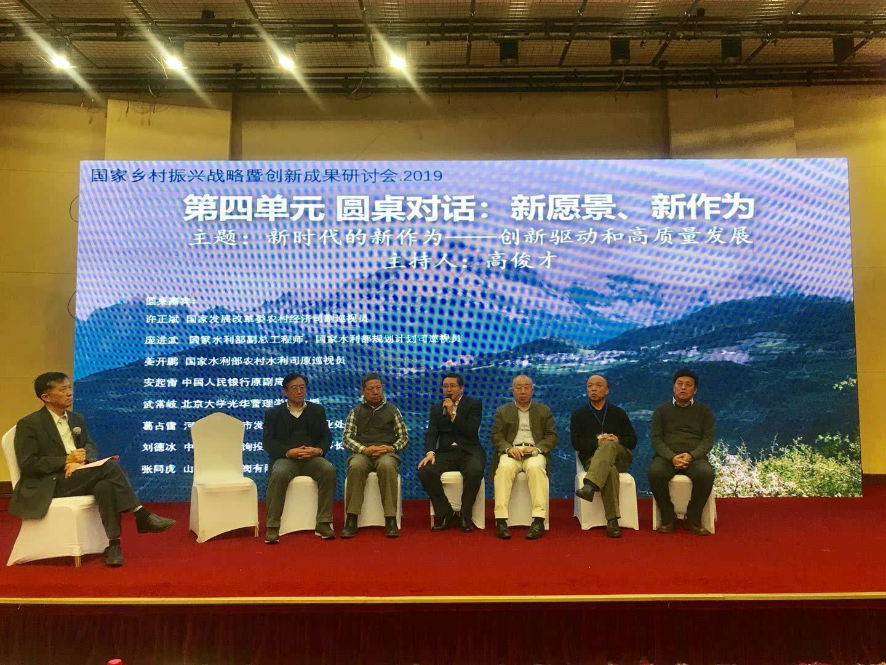

国家乡村振兴战略暨创新成果研讨会·2019在北京国宏宾馆举行

2019年中央经济工作会议明确了改革、创新与发展的新思路。为了学习贯彻党中央、国务院的重要部署，把握新时代，聚焦新愿景，实现新作为，由国家发展改革委国际合作中心主办，国合华夏城市规划研究院、山东莱德管阀有限公司和齐桓仲父大战略研究院联合召开的“新时代，新愿景，新作为--国家乡村振兴战略暨创新成果研讨会·2019”公益论坛于2019年1月15日下午在北京市西城区国宏宾馆举行。
本次研讨会聚集了国务院参事室、国家发改委、农业农村部、国家水利部、国务院发展研究中心、北京大学、中国人民大学，部委科研院所、地方政府、中央企业和地方企业家等部委领导、专家学者、地方政府和企业代表等，围绕在新时代的大背景下，乡村振兴、区域发展、智慧制造和“一带一路”等热点难点问题，结合对2019年中央经济工作会议精神解读，对未来全球形势预测，对我国当下产业政策、经济转型、实体企业创新发展和中美贸易等进行了精彩对话和高端演判。这次会议的召开，恰逢其时，既有使命感和前瞻性，又有引领性和操作性。
会议共分为领导致辞、主旨演讲、创新成果及智慧制造成果发布、圆桌对话：新愿景、新作为四个单元。会议由国家发展改革委宏观经济研究院副院长吴晓华主持，首先由会议主办单位国家发展改革委国际合作中心副主任刘建兴发表了致辞。刘主任的致辞，高屋建瓴，观点新颖，既顺应了宏观形势，又紧扣了地方痛点，为各地区推动乡村振兴、实施创新驱动提出了可预期的路径，充分体现了部委智库的研究水平和学者风范。全国工商联九届副主席、中国西部研究与发展促进会理事长程路的精彩致辞为我国经济发展描绘了美好蓝图，也为国家乡村振兴战略和创新驱动指明了方向。原国家质检总局副局长、国务院参事葛志荣发表的致辞演讲，具有前瞻性和预见性，增强了大家对乡村振兴的信心和思考。论坛承办单位齐桓仲父大战略研究院院长、中央军委办公厅原理论秘书管益忻和国合华夏城市规划研究院院长、国家发展改革委农经司原司长高俊才分别发表了会议致辞。高俊才院长发表了“乡村振兴既是发展战略也是当务之急”的主题致辞，从科技创新、文化建设等方面对乡村振兴、实体经济等提出了改革创新的观点，对新时代地方党政、企业家的战略转变起到指导、引领作用。
会议主旨演讲由国合华夏城市规划研究院院长、国家发展改革委农经司原司长高俊才主持，会议宣布了国合华夏城市规划研究院聘任学术委员的名单。高俊才指出，建设高端智库，是党中央、国务院的重大战略部署。国合城市研究院在国家发展改革委国际合作中心的正确领导、大力帮助和支持下，着力建设“行业一流的精致研究院”。为更好地聚集国内外专家资源，提升研究能力，研究院从国家部委智库、北京大学、中国人民大学和中央企业等聘请了一批行业内具有较高影响和专业水平的领导、专家、学者担任研究院学术委员，并加强专家之间的沟通，提高研究院专业水平。
会议主旨演讲邀请了五位演讲嘉宾，国家发展改革委农村经济司副巡视员许正斌发表了“国家乡村振兴战略规划与实施”主题演讲;国家发展改革委宏观经济研究院副院长吴晓华做了“乡村振兴是培育强大国内市场的根本举措”的精彩演讲;农业农村部乡村产业发展司巡视员王秀忠做了“乡村振兴的道路和逻辑”的精彩演讲;中央农办秘书局副局长江文胜做了专题演讲;中国人民大学农业与农村发展学院张利庠教授，发表了“未来农场：乡村振兴的突破口”的演讲。各位嘉宾的演讲聚焦国家乡村振兴战略和创新驱动战略等主题，充分考虑经济热点，产业政策、实施策略、经济转型、农民增收等前瞻性话题，凝聚共识，汇聚众智，全面推动国家乡村振兴战略。
会议第三单元是“创新成果及智慧制造”成果发布，由吴晓华副院长主持。创新是引领发展的第一动力，以创新驱动促进乡村振兴，是全面贯彻习近平新时代中国特色社会主义思想和党的十九大精神的必然要求。“乡村振兴战略”吹响号角，智慧制造不断取得新战果。国家发展改革委国际合作中心和山东莱德管阀公司为代表的部委智库和实体企业，聚焦乡村振兴、区域发展和创新驱动等难点问题，分别做了大胆探索与科技创新。
国家发展改革委国际合作中心研究员，国合华夏城市规划研究院执行院长吴维海代表研究团队发布了“新成果助力乡村振兴和高质量发展”国家发展改革委国际合作中心4大乡村振兴系列成果：《新时代区域发展战略》、《新时代乡村振兴战略规划与案例》、乡村振兴的潍坊模式和智慧乡村振兴战略信息管理系统(思路石系统，英文简称SRVS)。上述4大成果系统前瞻、科学规范、操作性强，实践意义很大。《新时代乡村振兴战略规划与案例》着重分析国内外乡村振兴案例和好的做法，系统研究我国农业产业振兴、生态文明、乡村治理、文化振兴等主要路径，以及农民增收渠道等模式，为各地区乡村振兴战略规划编制、实施产业振兴、文化振兴等提供了具体的基层借鉴。《新时代区域发展战略》从案例提炼、产业一体化、城市名片、特色小镇等载体为支撑，研究和创新了区域协同发展的改革思路和良好实践，为各地区跨域合作提供了指导和依据。同时，国家发改委国际合作中心、国合华夏城市规划研究院与政联信(福州)数据技术有限公司联合策划并研发的“智慧乡村振兴规划与评估系统(思路石系统)”获得了国家专利局11项著作权证书，这是服务国家乡村振兴战略的重大突破，也是建设创新型国家、创新型城市和创新型政府的积极探索，它为国家部委、地方政府实施智慧管理和智慧乡村振兴提供了可利用的动态、实时的管理工具和支撑手段。
企业代表山东莱德管阀有限公司张同虎董事长以本企业几十年发展历程为主线，发表了“塑造莱德品牌，引领管阀智造”的主题演讲。张同虎着重介绍了莱德管阀科技研发取得的成果，该公司经过几年的持续创新与探索，逐步形成了以创新提升产品质量，以精细管理打造工匠精神的企业文化，积极推进并实施“大数据+工匠精神+发明创造”的智慧工厂建设，持续提升自主研发能力，已经占据了中国管阀行业的领军地位，并在海外亚洲、非洲、欧盟等国家形成了较好的品牌影响力。

会议第四单元是圆桌对话：新愿景、新作为。习近平总书记在党的十九大报告中指出，要加快建设创新型国家，深化科技体制改革，建立以企业为主体、市场为导向、产学研深度融合的技术创新体系，加强对中小企业的创新支持，促进科技成果转化。圆桌对话邀请来自国家发展改革委、国家水利部、中国人民银行、北京大学等部委、高校、中央和地方企业的嘉宾，从不同视角对“新时代的新作为--创新驱动和高质量发展”畅所欲言，热烈讨论在新时代怎样充分发挥创新驱动对产业转型升级的引领作用，如何理解经济转向高质量发展，推动高质量发展。
本次会议是2019年以来我国高端智库、部委领导和企业家、学者的一次面对面互动和交流，为地方经济发展、产业升级、企业定位、乡村振兴和创新驱动等指明发展与突破之路。经过4个多小时的热烈研讨，与会嘉宾聚焦乡村振兴、创新驱动和产业转型等话题，发表了真知灼见，演讲内容丰富，观点前瞻系统，借鉴价值很大。大家通过交流对话，达成了共识，也为我国乡村振兴规划编制、决策实施、项目开发、区域发展、制造业技术创新和国际化等提出了可借鉴的发展思路。(李威 金飒)


 意见反馈
意见反馈